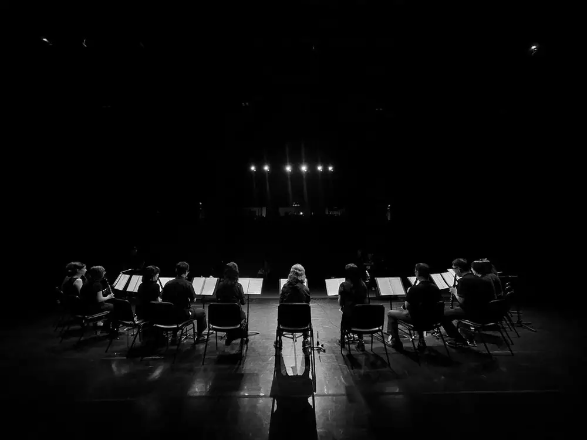
01 · 核心專長
劇場與表演藝術
舞台劇、音樂會、舞蹈平面攝影。曾服務近百場大小型演出團隊，從樂團、劇團到藝術節，鏡頭始終留在觀眾看不見的角落。
- 舞台劇
- 音樂會
- 舞蹈
- 藝術節
暗舞台環坐合奏——演出紀錄作品（出處：Flickr）
Numbers · 重點數字
2017 年
深耕台南的起點
本人自述：從 2017 年開始深耕台南
2025 年
公司登記設立
南城當代書寫影像有限公司，5 月 13 日設立
5 大
品牌部門
照相雞、蚵嗲、活石、泥巴、老派
6 個
劇團與藝術節
平面攝影合作，見講師介紹海報
Bio · 學經歷
從公司負責人到攝影圖書房發起人，他的頭銜是一張地圖：每一處，都是影像與空間交會的地方。
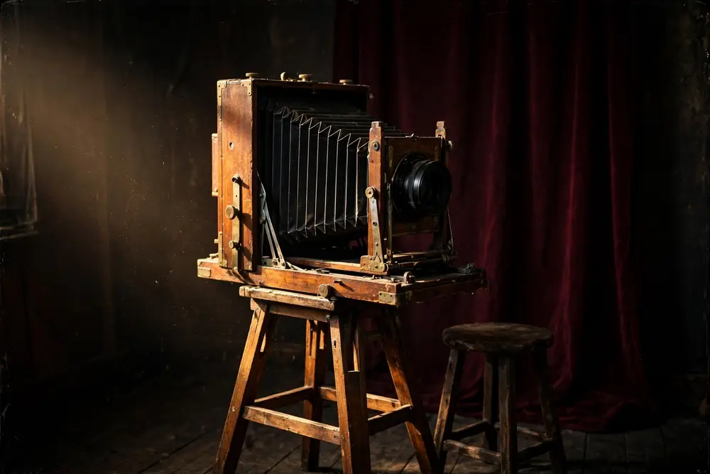
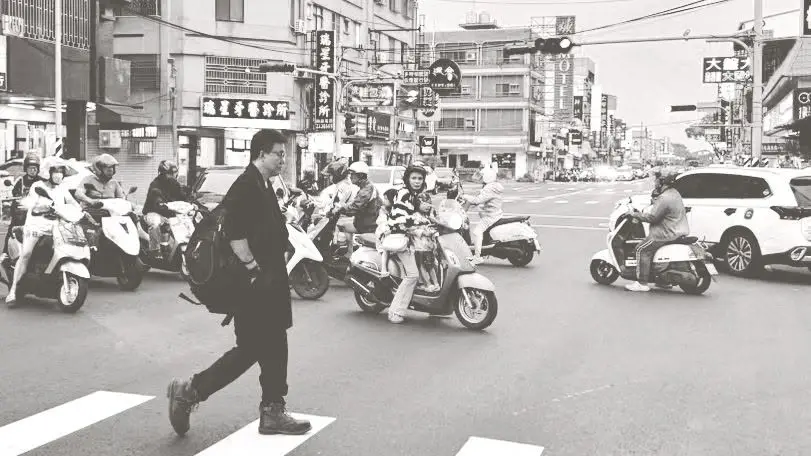
Craft · 專長
劇場是核心，其他三軌都是同一雙眼睛的延伸：看見人，看見場合，看見照片做成書之後的樣子。

01 · 核心專長
舞台劇、音樂會、舞蹈平面攝影。曾服務近百場大小型演出團隊，從樂團、劇團到藝術節，鏡頭始終留在觀眾看不見的角落。
暗舞台環坐合奏——演出紀錄作品（出處：Flickr）
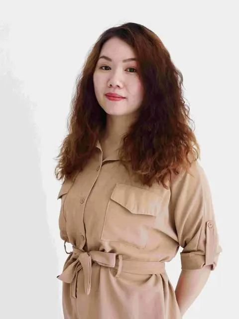
02
從一個人到一家人，棚內棚外都拍。
白底人像寫真——人像寫真作品（出處：IG）
03
婚宴與活動的全程側拍，連周邊整合服務一起包辦。
概念插畫：黃昏廟埕前的打擊樂演出剪影（AI 生成示意）
04
影像書課程、電影賞析與體驗營，陪學員把照片做成一本書。
概念插畫：桌上疊放的攝影書與閱讀燈（AI 生成示意）
Departments · 五大部門
南城當代書寫影像有限公司底下，五個品牌部門各管一塊：拍照、創作、空間、場地、老派技術。

01
人像寫真、家庭親子、活動婚宴、劇場展演紀錄。
02
在地跨界影像創作、展覽策劃與藝術串聯。
03
多功能空間租借、商業借址營登服務。
04
展覽、講座與表演藝文場地提供。
05
古典攝影技術體驗與攝影家朝聖之路推廣。
出處：Threads 公司介紹貼文（2026-08-18）。
Timeline · 時間軸
八個年份，八個轉折。先拍別人的舞台，再蓋自己的空間——這個順序從 2016 年到現在沒有變過。
2016
開始擔任不貧窮藝術節、展翼人文實驗樂團、古都木偶劇團的平面攝影師，鏡頭走進劇場。
出處：FB 講師介紹海報2017
自 2017 年起深耕台南，以影像為筆、空間為頁，開始經營屬於這座城市的影像與空間事業。
出處：Threads 本人自述2018
開始為雲樹雅集樂團、長藝閣掌中劇團擔任平面攝影；同年擔任策展人／創作者。
出處：FB 講師介紹海報／FB 公開資訊
2020
擔任東聖玩學營講師，開始教育推廣；以斯帖舞蹈劇團的合作亦至 2020 年。
出處：FB 講師介紹海報2021
擔任冬季農場生態攝影體驗營講師；同年擔任城市系列聯展策展人。
出處：FB 講師介紹海報／FB 公開資訊2023
擔任 BNI 高屏區 2023 INW 國際人脈交流週晚宴平面攝影師。
出處：FB 講師介紹海報2025
2025 年 5 月 13 日，公司登記設立於台南市永康區，照相雞攝影工房隸屬其下，品牌事業正式公司化。
出處：公司登記2026
於 Threads 公布五大品牌部門架構；同年 11 月，講師介紹海報公開九項現職與劇團經歷。
出處：Threads／FBTeaching · 教學與攝影書
他的教學只有一個主軸：影像不只是拍下來，還要能被閱讀、被書寫、被收藏成冊。
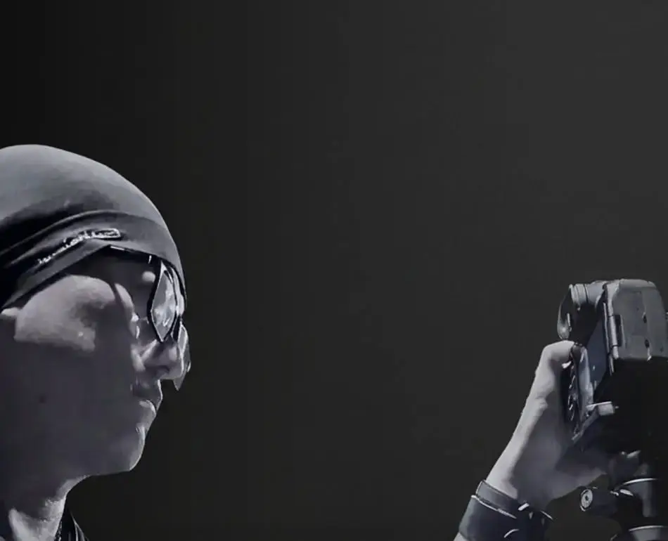
以上為教學與推廣身分，課程內容以主辦單位公告為準。
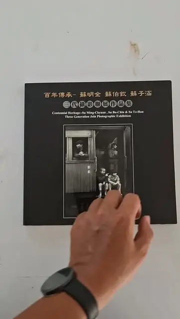
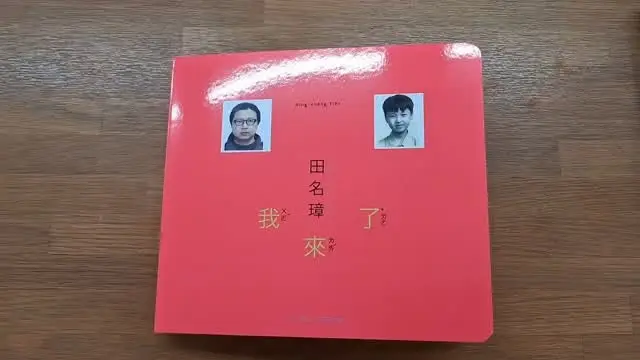
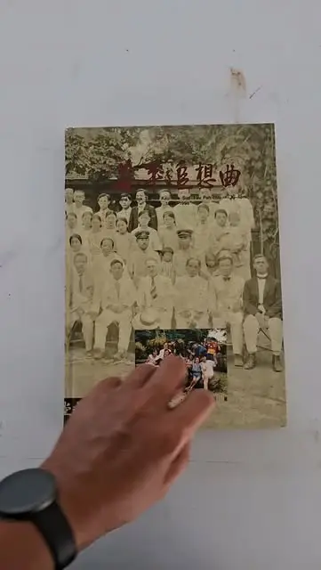
Gallery · 照片牆
點照片放大，用左右鍵或按鈕切換。照片均為演出紀錄與寫真作品，人物不標示為本人。
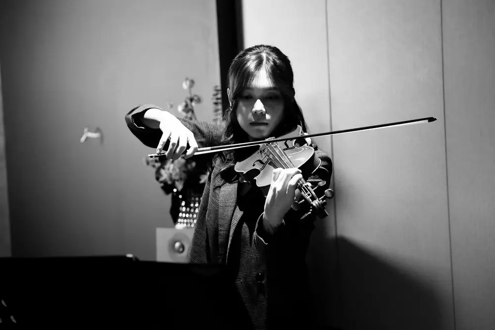
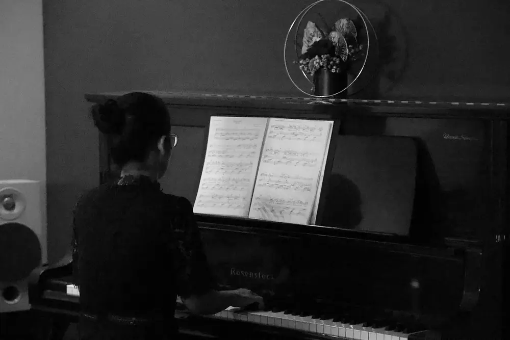
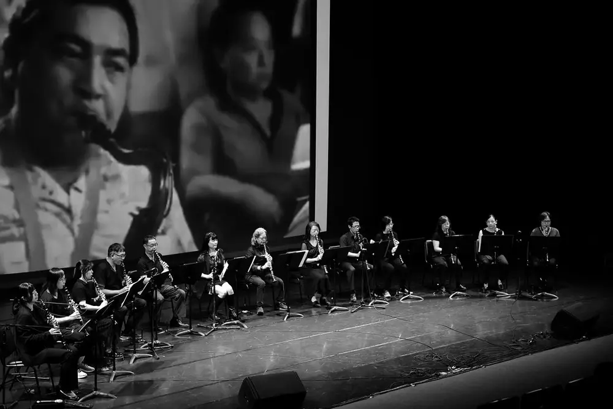
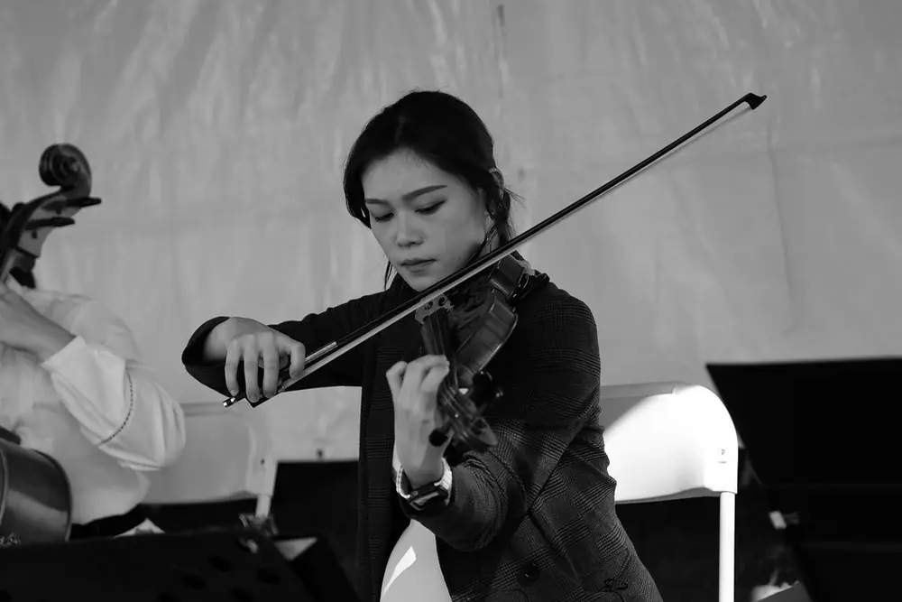
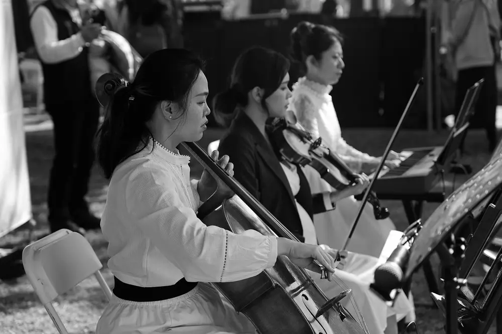
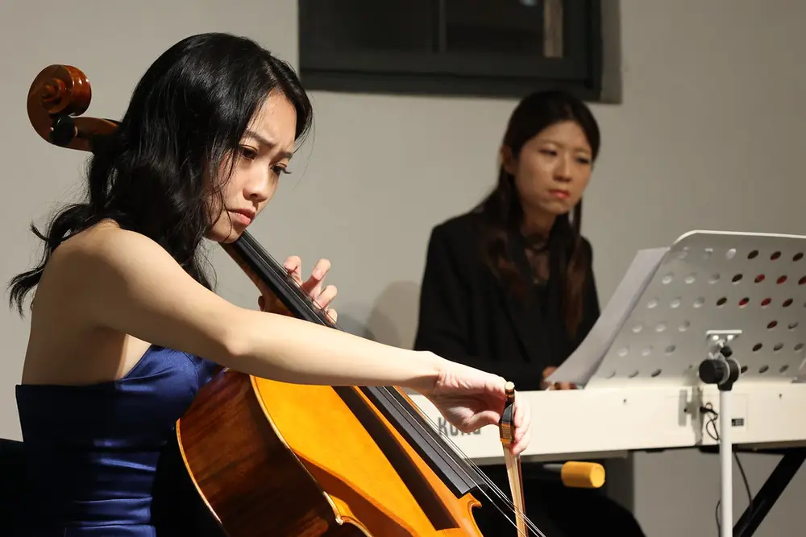
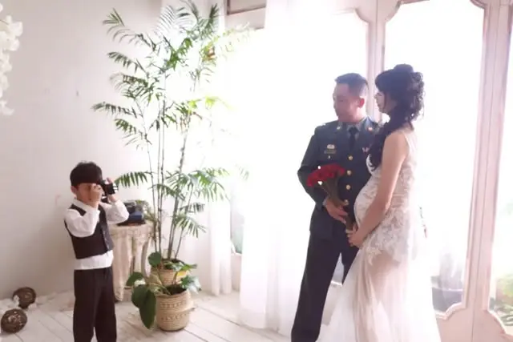
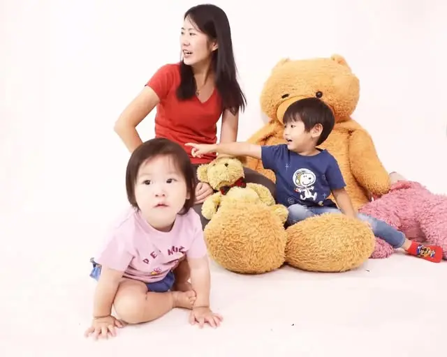
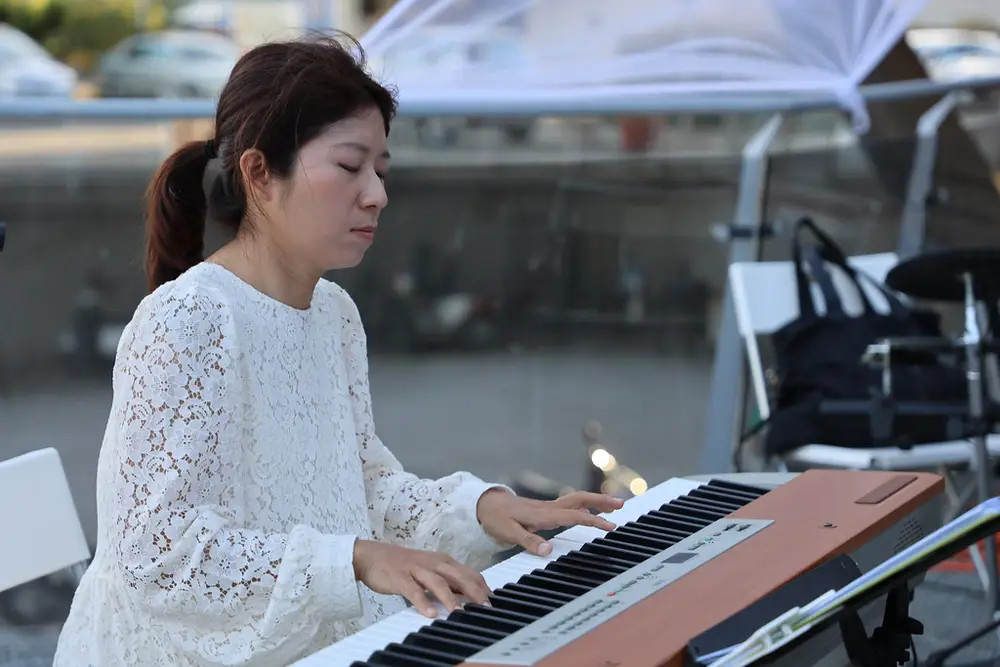
Contact · 聯絡
拍攝洽詢、場地租借、課程與攝影書相關事宜，歡迎直接聯絡。
工作室地址
臺南市永康區中山東路 20 巷 8 號 3 樓 3B 室
公司登記於同棟 2 樓
營業時間
週二至週日 09:00–18:00
Line ID
bedouinhao1982